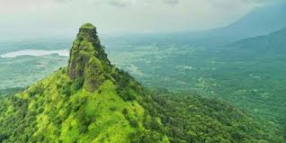
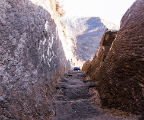
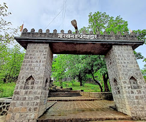

गोरख किल्ला
Location : Click Here For Google Map
- माहिती
- गोरख किल्ला, जो महाराष्ट्राच्या अहमदनगर जिल्ह्यात स्थित आहे, एक ऐतिहासिक किल्ला आहे. किल्ल्याची उंची सुमारे १,५०० मीटर (४,９८४ फूट) आहे. गोरख किल्ल्याच्या शिखरावरून सुंदर दृश्य दिसते आणि किल्ल्याच्या अवशेषांतून त्याचा ऐतिहासिक महत्त्व स्पष्टपणे दिसून येतो. गोरख किल्ल्याची संरचना प्राचीन आहे आणि याचा वापर मराठा साम्राज्याच्या काळात संरक्षणासाठी करण्यात आले होते. किल्ल्याच्या शिखरावर असलेले मंदिर, विविध बुरुज आणि भिंती तसेच किल्ल्याच्या आसपास असलेल्या रांगेत काही डोंगर रांगा अत्यंत आकर्षक आणि ऐतिहासिक महत्त्वाच्या आहेत. गोरख किल्ला ट्रेकर्ससाठी एक आव्हानात्मक गंतव्य आहे. आजकाल, गोरख किल्ला साहसी ट्रेकिंग प्रेमींना आकर्षित करणारा एक महत्त्वाचा ठिकाण बनला आहे. गोरख किल्ल्याची इतिहास, किल्ल्याच्या इमारतींची रचना आणि भौगोलिक दृश्य यामुळे तो ऐतिहासिक आणि साहसी प्रवासाच्या प्रेमींना एक अप्रतिम गंतव्य बनवतो.
Explore the historical beauty


